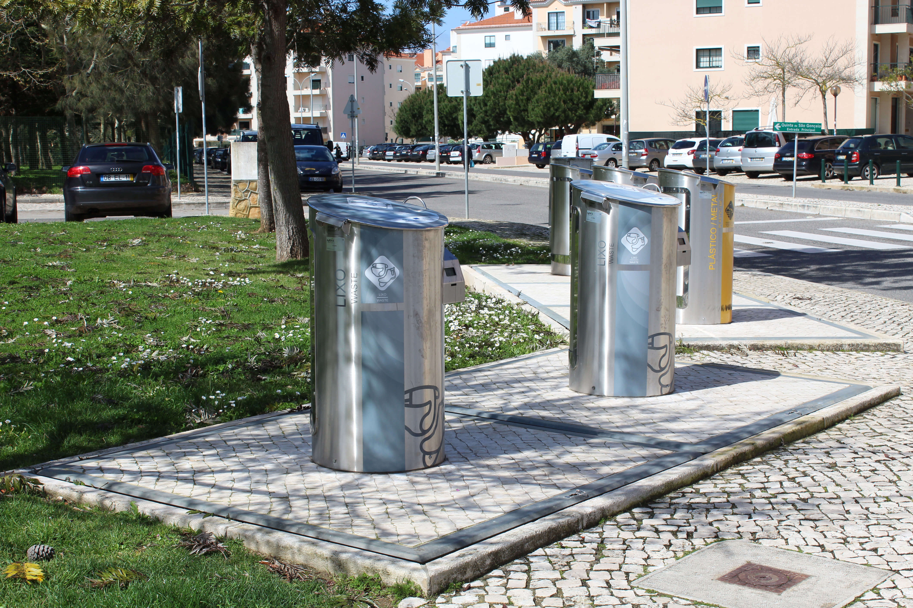
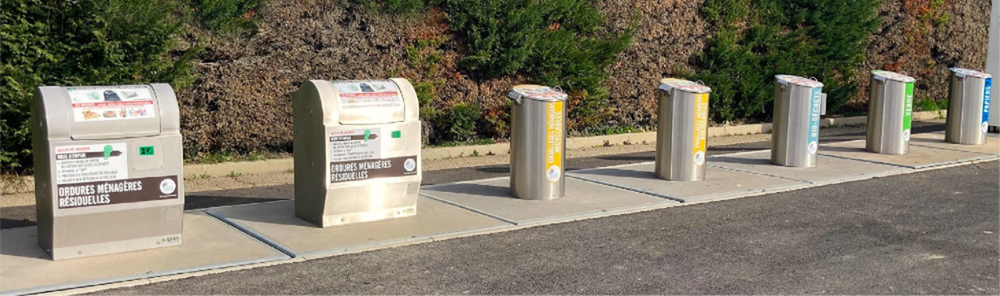
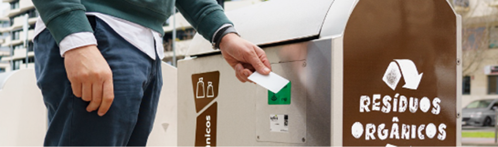

Sotkon waste systems
Simple and efficient equipment for cleaner smart cities.
Underground and semi-underground waste solutions designed for high capacity, fast collection, lower operating costs and elegant urban integration.
This is our koncept
Waste infrastructure that disappears into the city, not into maintenance budgets.
Sotkon designs, manufactures and installs modular waste systems that arrive pre-assembled and ready for deployment. The approach is deliberately simple: more storage capacity, fewer collection trips, safer operation and equipment that is easy to use every day.

Product families
Complete systems for every urban condition.
Koncept
Sotkon's patented star product: a high-capacity underground waste storage system with simple operation and long service life.
Evos
A compact robust system where components move together during collection, built for high capacity and fast handling.
Integra
Fully automated side-loading collection with simple mechanisms, remote operation and low maintenance demands.
Qubus
Applies Sotkon principles where underground infrastructure or harsh winter conditions make partial above-ground placement the better answer.
Oily and O+
Practical surface systems for cooking oil, organic waste and specific streams where underground installation is not needed.
Operational advantage
Fewer trips, fewer vehicles, cleaner streets.
Sotkon equipment increases available capacity while letting many cities use collection vehicles they already operate. That means less fuel, lower maintenance, shorter routes and a visible improvement in street-level waste hygiene.
Urban integration
Adapt intake columns and platform finishes to the character of each street.
Fast payback
Lower route frequency, personnel needs and maintenance pressure.
PAYT ready
Pair hardware with access control and data for fairer waste taxation.
Connected operation
Sotkon hardware works with SOTKIS intelligence.
Filling level sensors, access control and PAYT-ready modules help municipal teams understand who deposits waste, when containers need collection and how routes can be planned with fewer wasted trips.
Monitor container fill levels and optimise collection routes.
Identify usage by resident, waste stream and deposition event.
Enable fairer taxation based on real usage data.

Since 1995
Built for circular economies and everyday municipal work.
Sotkon is an international company dedicated to the design, manufacture and sale of underground and semi-underground waste systems. The company focuses on durability, safety, simple operation and urban solutions that support more sustainable communities.
Start a projectNext step
Plan a cleaner city system.
This prototype keeps the public content structure and reframes it as a modern sales website for municipalities, operators and distributors.